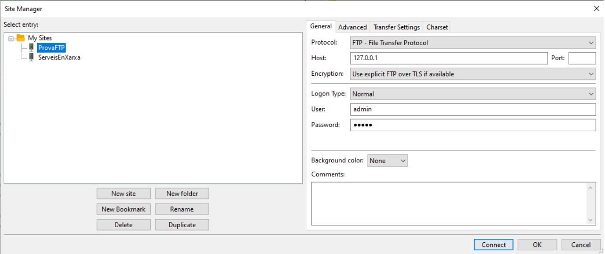
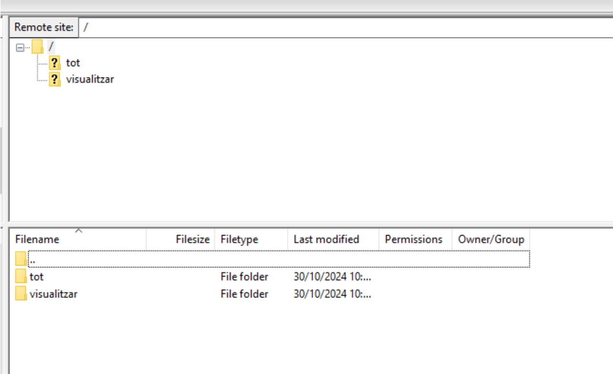
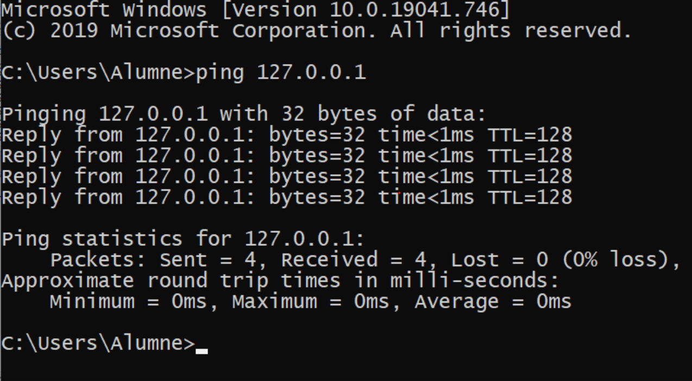
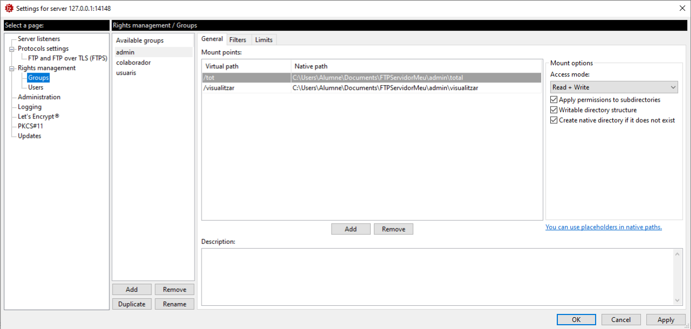
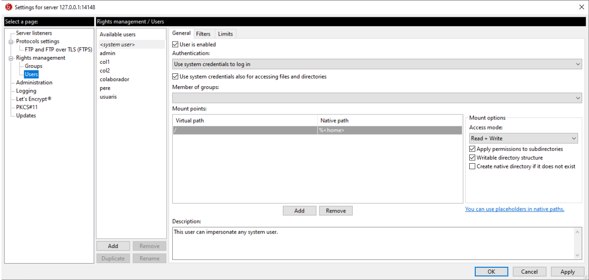
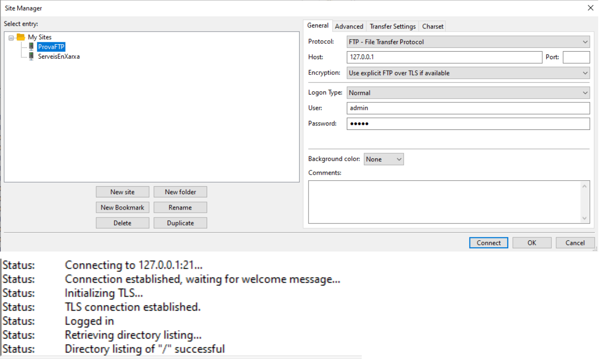
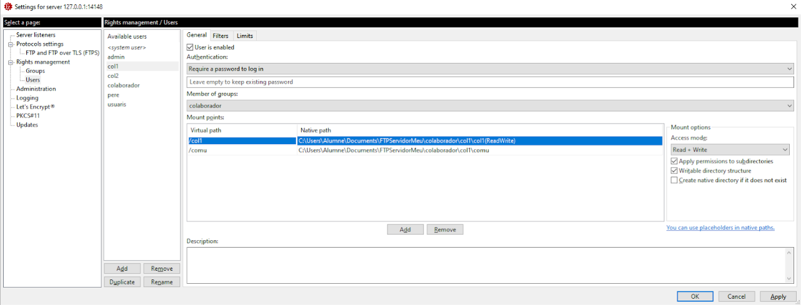
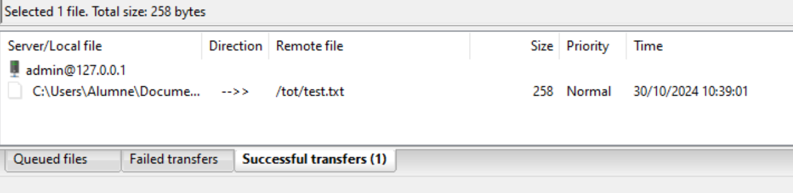
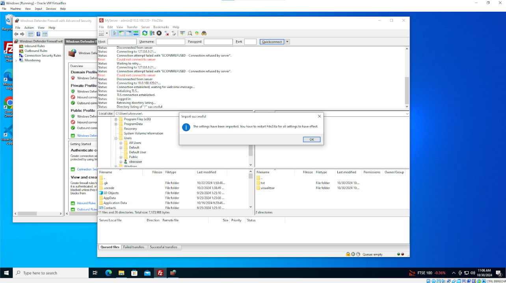
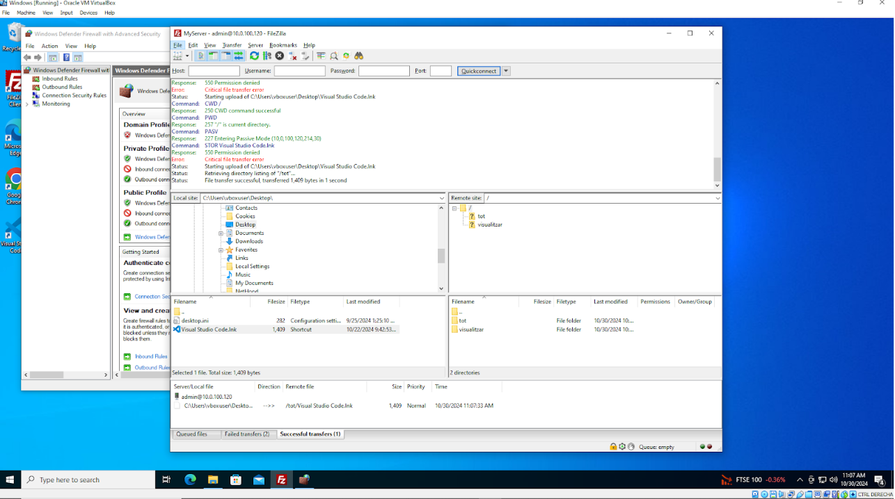

Crearem un servidor FTP local amb Filezilla Server. Per desenvolupar aquesta implementació i pas a producció ho farem durant vàries fases que son:
a. Proves sobre un servidor existent (Practica anterior).
Instal·lació del servidor en mode local
Configuració bàsica del servidor i posada en marxa
 Proves de connexió amb eines ping, ftp, traceroute, etc..
Creació d’un grup i un usuari administrador a FTP server.
 Proves de connexió.
Configuracióde grups i usuaris.
Aquí tens un parell de usuaris, per cada usuari li pots donar access a diferents folders en un mateix grup
Documentació de proves de funcionament
Exportació configuració. Document xml
Entregat a classroom
Muntatge sobre la màquina virtual. Sobre un node la nostra xarxa. Proves de connexió i control del firewall.
Importació de la configuració XLM
 
M'ha agradat aquesta pràctica perque es interessant compartir arxius de diferents ordinador i poder-hi accedir de un altre pc